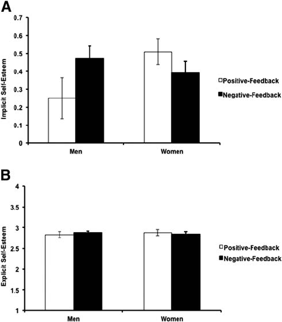
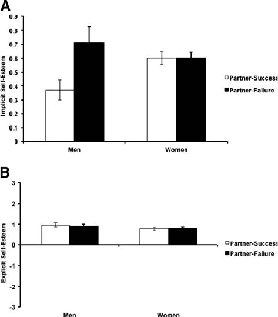
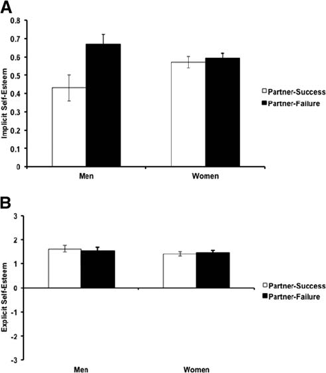
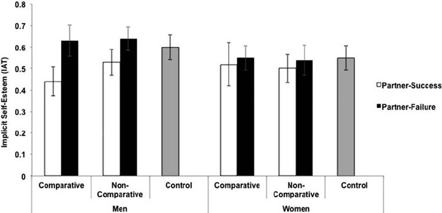
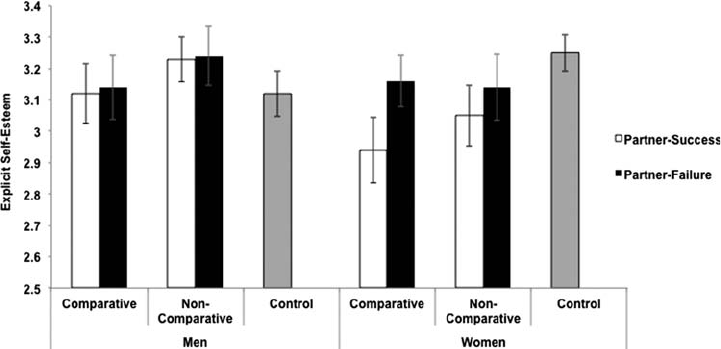

Gender Differences in Implicit Self-Esteem Following
a Romantic Partner’s Success or Failure
Kate A. Ratliff
University of Florida
Shigehiro Oishi
University of Virginia
This research examined the influence of a romantic partner’s success or failure on one’s own implicit and
explicit self-esteem. In Experiment 1, men had lower implicit self-esteem when their partner did well at
a “social intelligence” task than when their partner did poorly. Women’s implicit self-esteem was
unaffected by partner performance. Experiments 2 and 3 showed that Dutch men’s implicit self-esteem
was negatively affected by their romantic partner’s success. In Experiment 4, we replicated Experiments
1–3 in both the academic and social domains, and in Experiment 5, we demonstrated that men’s implicit
self-esteem is negatively influenced by thinking about a romantic partner’s success both when the success
is relative and when it is not. In sum, men’s implicit self-esteem is lower when a partner succeeds than
when a partner fails, whereas women’s implicit self-esteem is not. These gender differences have
important implications for understanding social comparison in romantic relationships.
Keywords: implicit self-esteem, gender differences, social comparison
Imagine for a moment that your romantic partner experienced a
great success, such as a promotion at work, being elected to a local
office, or reaching a personal weight loss goal. How would that
make you feel about yourself? Tesser’s (1988) self-evaluation
maintenance model (SEM) posits that a close other’s success in a
self-relevant domain can make people feel threatened, leading to
(a) a feeling of distance from the close other, (b) downplaying the other’s
success, and (c) predicting poor future performance for the other
(Tesser & Campbell, 1982; Tesser & Smith, 1980). The self-
evaluation maintenance model, like other models of social com-
parison, accounts for situations in which one person is outper-
formed on some dimension.
The main idea of the SEM is that another person’s success
invites comparison of the self to the more (or less) successful
other, which influences self-evaluations. The closer the relation-
ship, and the more important the domain of comparison, the more
one will engage in comparison and the more one’s self-evaluations
will be influenced (Tesser, 1988). In romantic relationships, how-
ever, not all successes for one partner imply a failure for the other
partner. For example, your partner reaching his goal to lose weight
would be a success for him but would not make him more suc-
cessful than you if you were not trying to lose weight also.
While it makes sense that Tom might feel threatened if his
girlfriend Jane outperforms him, it is less clear how Tom would
feel about himself if Jane succeeds when they are not in direct
competition with one another. This latter situation, which is likely
to be common in the daily lives of our relationships, is the focus
of the present research. In five studies, we examine how self-
esteem is influenced by the success or failure of one’s romantic
partner.
We might imagine two possible outcomes for self-esteem re-
sulting from a romantic partner’s success. On one hand, a partner’s
success could lead to an increase in self-esteem (the “basking in
reflected glory hypothesis”; Cialdini et al., 1976). Aron and Aron
(1986) proposed that individuals in close relationships often per-
ceive the self as including the resources, perspectives, and char-
acteristics of their partner. Therefore, one’s self-esteem might
increase due to a partner’s success or decrease due to a partner’s
failure. If Jane succeeds, Tom succeeds too. This prediction is also
consistent with Beach, Tesser, Mendolia, and Anderson’s (1996)
extension of Tesser’s (1988) self-evaluation maintenance model
into the realm of marital relationships. The extended self-
evaluation maintenance model posits that, although it could be
negative to compare unfavorably to a romantic partner, that neg-
ativity is offset by empathetically sharing the partner’s positive
affect.
On the other hand, a partner’s success could lead to a decrease
in self-esteem (the “zero-sum game hypothesis”) if we interpret
“my partner is successful” as “my partner is more successful than
me.” Upward social comparisons (comparing oneself unfavorably
to a more successful other) have been shown to lead to unfavorable
self-evaluations (see Collins, 1996, or Wood, 1989, for reviews).
This article was published Online First August 5, 2013.
Kate A. Ratliff, Department of Psychology, University of Florida; Shige-
hiro Oishi, Department of Psychology, University of Virginia.
The Experiment 4 data were collected as part of Shigehiro Oishi’s
bachelor’s thesis project at Tilburg University. This research was supported
by Project Implicit. Many people provided helpful comments on this
article. We would especially like to thank the members of Shigehiro
Oishi’s Culture and Well-Being Lab at the University of Virginia, Brian
Nosek’s Implicit Social Cognition Lab at the University of Virginia, and
the Hardcore Social Cognition Research Group at Tilburg University. We
would also like to thank Suzan Elshout, Femke Hilverda, and Thijs Lam-
booij for help creating materials, translating materials, and collecting data.
Correspondence concerning this article should be addressed to Kate A.
Ratliff, Department of Psychology, Psychology Building, Box 112250,
University of Florida, Gainesville, FL 63211. E-mail: ratliff@ufl.edu
Journal of Personality and Social Psychology © 2013 American Psychological Association
2013, Vol. 105, No. 4, 688–702 0022-3514/13/$12.00 DOI: 10.1037/a0033769
688
Further, Beach et al. (1998) showed that the extended self-
evaluation model fails in domains high in self-relevance; that is,
even partners in committed relationships experience negative feel-
ings when their partner outperforms them in a domain important to
their self-concept.
A possible way to reconcile these competing hypotheses regard-
ing responses to a partner’s success or failure is to separately
examine self-esteem outcomes for men and women. This is the
focus of the present research. Although there is little direct evi-
dence for gender differences, there is reason to suspect that women
might react more favorably (the “basking in reflected glory hy-
pothesis”) and that men might react less favorably (the “zero-sum
game hypothesis”) to a partner’s success. We further explicate this
argument below.
Possible Gender Differences in Reactions to a
Romantic Partner’s Success or Failure
Using Tesser and Campbell’s (1982) paradigm to examine gen-
der differences in self-esteem maintenance, Gardner, Gabriel, and
Hochschild (2002, Experiment 1) found evidence for self-esteem
maintenance among men, but not among women. Men predicted
poorer performance for a friend on a self-relevant task (GRE) than
on an irrelevant task (trivia), whereas women did not show this
pattern (see Pilkington, Tesser, & Stephens, 1991, for a similar
gender difference). Gardner et al. reasoned that (a) women see
themselves in terms of their relationships with close others to a
greater degree than men do (Cross & Madson, 1997; Gabriel &
Gardner, 1999), and (b) to the extent that a close other (e.g., close
friend, romantic partner) is part of who they are, a close other’s
success, even in a self-relevant domain, does not pose a threat to
their self-worth. In contrast, a close other’s success in a self-
relevant domain is a threat to men’s self-esteem. This finding
provides initial support for the hypothesis that a romantic partner’s
success would hurt men’s, but not women’s, self-esteem.
In addition to gender differences in including one’s partner in
the self, we believe that the success of the partner might harm
men’s self-esteem more than women’s in part because men tend to
value agentic traits (e.g., competence) more than women do (Gui-
mond, Chatard, Martinot, Crisp, & Redersdorff, 2006; Helgeson,
1994). Researchers have found also that men tend to exaggerate
their agentic traits, whereas women tend to exaggerate communal
traits (Paulhus & John, 1998). To the extent that competence is a
more central to men’s self-perceptions than to women’s, men’s
self-esteem is more likely to be negatively affected when their
competence is in question.
Relatedly, men tend to be more competitive than women (Buss,
2004; Maccoby, 1998). Maccoby (2002) argues that, from a very
young age, boys’ playtime interaction tends to be marked by
dominance-striving. Competition within social groups is a way for
boys to “prove their worth.” Young girls also pursue individual
goals within social groups, but tend to do so while simultaneously
striving to maintain group harmony. Liening, Mehta, and Josephs
(in press) argue that men’s greater competitiveness arises from a
combination of patriarchal social structures, evolution benefitting
aggressive men, and differences in the underlying biological mech-
anisms that drive men’s and women’s behavior.
A similar argument is that self-esteem might be impacted when
one fails to fulfill the roles ascribed to one’s gender. For men, this
includes being independent, autonomous, and better than others
(Josephs, Markus, & Tafarodi, 1992). Further, gender is strongly
associated with widely shared stereotypes. Men are typically as-
sociated with success and competence; women are largely as-
sumed to be less competent and less achievement-oriented; even
when women are successful, their abilities are often downplayed
by others (Eagly & Karau, 2002). Gender stereotypes would there-
fore suggest that it is more acceptable for a woman to have a
successful male partner than it is for a man to have a successful
female partner. Having internalized such stereotypes, men’s self-
esteem might be particularly threatened by a female partner’s
success.
Research Overview
In the present research, we examined gender differences in the
influence of a romantic partner’s success or failure on implicit and
explicit self-esteem. Although the self-evaluation maintenance
model has produced a considerable literature, the present research
is unique in at least four ways.
First, in the present work we examine the effects of comparison
on self-esteem, which is defined as an overall sense of personal
worth. Most previous studies have not measured self-esteem as an
outcome; instead, many use psychological distance and perceived
validity and importance of the task as dependent variables (see
Tesser & Martin, 2006, for a review).
Second, in the present work we set out specifically to test for
gender differences in response to a romantic partner’s success or
failure. Research other than that by Gardner et al. (2002) has not
directly, intentionally, and systematically investigated such gender
differences. Because men and women have different social roles,
different expectations for their close relationships, and different re-
sponses to competition, it is likely that men and women’s self-esteem
is differentially impacted by a romantic partner’s success or failure.
Third, we test whether a romantic partner’s success or failure
influences one’s own self-esteem, even if no comparison information
is available. As mentioned previously, the literature on comparison
within romantic relationships tends to focus on the outcome of one
partner performing better or worse than the other rather than on
reaction to a partner’s success or failure in the absence of a compar-
ison (Gardner et al., 2002; Lockwood, Dolderman, Sadler, & Ger-
chak, 2004; Pinkus, Lockwood, Schimmack, & Farnier, 2008). One
exception is a study by McFarland, Buehler, and MacKay (2001;
Experiment 3) where participants were asked to imagine a scenario in
which a close, semiclose, or distant other performed well or poorly.
The participant received either explicit comparison information (in-
formation about one’s own performance and the other’s performance)
or implicit comparison information (information only about the oth-
er’s performance). They found that negative affect was the highest
when people made explicit comparisons with distant others and was
lowest when people made implicit comparisons with close others.
While this finding is somewhat inconsistent with the idea that men’s
self-esteem would be negatively impacted by the success of a roman-
tic partner, the present research differs from that study in several
ways. Most importantly, the sample in their study consisted of only
25% men (resulting in less than five men in each experimental
condition—not enough to test for gender differences). Also, partici-
pants were asked to imagine the outcome of a close other, but not
necessarily a romantic partner. And, more substantially, those re-
689
GENDER DIFFERENCES IN IMPLICIT SELF-ESTEEM
searchers measured (self-reported) affect as their dependent measure
rather than (implicit) self-esteem. That those participants reported
feeling happy for a close other who succeeds might indicate that
people feel that they are supposed to feel happy about a close others’
success.
This brings us to the fourth—and arguably the most important—
way that the present work is different from previous research.
Importantly, we examine explicit self-esteem (conscious, self-reported
self-evaluations) and implicit self-esteem (self-evaluations that occur
outside of conscious awareness). Implicit and explicit self-esteem
have been argued to be independent constructs (Greenwald &
Banaji, 1995) that uniquely predict different social behaviors
(Bosson, Swann, & Pennebaker, 2000; Greenwald & Farnham,
2000; Jordan, Spencer, & Zanna, 2002; Spalding & Hardin, 1999).
Tesser (1988) argues that it is not useful to study self-esteem in
the context of the self-evaluation maintenance model because
reports of self-esteem require self-report and therefore have “lim-
ited utility” (p. 209; see also Tesser, 2000). Implicit self-esteem is
important methodologically and theoretically because it bypasses
some of the problems of self-report (e.g., social desirability con-
cerns, lack of self-knowledge; see Nosek, 2005). For instance,
social norms and personal values might prevent men’s expression
of a negative response to a partner’s success (or positive response
to her failure). However, an implicit measure of self-esteem could
capture the feeling even if it goes unacknowledged and unreported
(to the self or others). Thus, our prediction is that the success of the
partner will hurt men’s self-esteem more than women’s when
self-esteem is measured implicitly.
We conducted five studies to test our central hypothesis that a
romantic partner’s success will hurt men’s—but not women’s—
implicit self-esteem. We also examined the consequences for part-
ners’ optimism about the future of their relationship (Study 4) and
relationship satisfaction (Study 5). In Experiment 1, we gave partic-
ipants false feedback about their partner’s performance on a “test of
social intelligence.” After being told that their romantic partner had
performed in the top 12% (success condition) or in the bottom 12%
(failure condition) of undergraduates, participants’ own implicit self-
esteem was measured with an Implicit Association Test (IAT; Green-
wald, McGhee, & Schwartz, 1998). In Experiment 2, we tested our
hypothesis with Dutch participants who described a time that their
romantic partner had succeeded or failed. Experiment 3 used a Single-
Category Implicit Association Test (SC-IAT: Karpinski & Steinman,
2006) to measure Dutch men’s implicit self-esteem after describing a
romantic partner’s success or failure. Experiment 4 examined whether
the domain of a partner’s success or failure influenced implicit self-
esteem for men and women and, finally, Experiment 5 tested the
hypothesis that men will respond to “my partner is successful” in the
same way that they respond to “my partner is more successful than
me,” suggesting a potential explanation for the finding of gender
differences in (implicit) self-esteem following a romantic partner’s
success or failure.
Experiment 1
Participants
Participants were 32 undergraduate heterosexual dating couples
from the University of Virginia (total N ϭ 64). They participated
either to partially fulfill a course requirement or for $8 payment.
The mean age of participants was 18.9 years (SD ϭ 1.52). The
average relationship length was 10 months and did not moderate
any study results.
Design and Procedure
Partners were seated in separate, adjacent rooms when they
arrived at the laboratory. They first completed demographic and
relationship satisfaction items. Participants were asked to indicate
their agreement with four statements designed to assess overall
satisfaction with the romantic relationship. The items were (a) “I
am happy with my current partner,” (b) “I am optimistic about the
future of this relationship,” (c) “I have a strong relationship with
my partner,” and (d) “My relationship with my partner is reward-
ing.” The items were answered on a 7-point scale ranging from
(Ϫ3) Strongly Disagree to (3) Strongly Agree (Cronbach’s
alpha ϭ .82).
Each participant was then given a test that was described as a
“test of problem solving and social intelligence” (developed by
Whitchurch & Wilson, 2007; see Appendix A for instructions and
a sample item). The “test” consisted of five scenarios describing
some difficulty an individual was having at home or work and the
advice given by two different counselors about how the person
might deal with that problem. Participants were told that there was
a correct answer, determined by actual counselors, and that their
total “problem solving and social intelligence” score was the
number of times that they agreed with the advice chosen by the
professionals and correctly predicted the outcome of the patient.
After taking a brief period of time to “score” the tests, the
experimenter went to each partner individually and told them that
their romantic partner had scored in either the top 12% of Univer-
sity of Virginia students (positive partner-feedback condition) or
the bottom 12% of University of Virginia students (negative
partner-feedback condition). The feedback was randomized across
all participants, not across partners, meaning that some participants
received the same feedback that their partner did and some par-
ticipants received different feedback than their partner did. No
information was given to the participants about their own perfor-
mance. Extensive debriefing revealed that all but two participants
believed the feedback. Data from those two participants were
dropped from analysis. After receiving the feedback about their
partner’s performance, participants completed measures of their
own implicit and explicit self-esteem (order counterbalanced
across participants).
Dependent Measures
Implicit self-esteem. The Implicit Association Test (IAT;
Greenwald et al., 1998) has been widely used as a measure of
implicit self-esteem (e.g., Greenwald & Farnham, 2000) and other
self-concepts (Asendorpf, Banse, & Mücke, 2002). The self-
esteem IAT assesses associations among two concept categories
(self and other) and two evaluative attributes (good and bad) by
requiring that participants categorize stimulus items representing
the four categories as quickly as possible using two keys of a
computer keyboard. The IATs consisted of seven trial blocks
following the recommendation of Nosek, Greenwald, and Banaji
(2005). Analysis with the D algorithm (Greenwald, Nosek, &
Banaji, 2003) had the following features: response latencies Ͻ 400
690
RATLIFF AND OISHI

ms were removed, and trial latencies were calculated from the
beginning of the trial until the time of a correct response. The IAT
was scored such that positive scores indicate a stronger association
between self ϩ good and other ϩ bad relative to self ϩ bad and
other ϩ good; that is, higher scores indicate higher implicit self-
esteem. The split-half IAT reliability was .68. No participants were
excluded for too-high error rates (greater than 40% on any block or
greater than 30% overall).
Explicit self-esteem. Global explicit self-esteem was mea-
sured using the Rosenberg (1965) Self-Esteem Scale (RSE).
The RSE consists of 10 statements related to overall feelings of
self-worth. The items were answered on a 4-point scale ranging
from (1) Strongly Disagree to (4) Strongly Agree (Cronbach’s
alpha ϭ .77).
Results and Discussion
Relationship satisfaction. Overall, participants reported be-
ing quite satisfied with their romantic relationship (M ϭ 1.37,
SD ϭ 0.61), and there was no difference in relationship satisfac-
tion for men (M ϭ 1.41, SD ϭ 0.65) compared to women (M ϭ
1.32, SD ϭ 0.58), t(60) ϭ 0.57, p ϭ .57, d ϭ 0.15). Relationship
satisfaction did not moderate any of the results reported below.
Implicit self-esteem. Because participants were nested within
a couple, individual responses are not independent. Thus, we
analyzed implicit self-esteem with a multilevel random coefficient
model analysis using the HLM 6.04 program (Raudenbush, Bryk,
& Congdon, 2004). The Level 1 (within-couple) equation was
implicit self-esteem ϭ
0
ϩ
1
ء
partner feedback condition ϩ

2
ء
participant’s gender ϩ
3
ء
feedback-by-gender interaction ϩ r.
Feedback condition was coded such that partner negative condition
was Ϫ1 and partner positive condition was ϩ1. Gender was coded
such that men were Ϫ1 and women were ϩ1. There were no Level
2 (between-couple) level predictors. There were no main effects
of gender (
2
ϭϪ0.047, SE ϭ 0.037), t(58) ϭϪ1.29, ns,or
feedback condition (
1
ϭϪ0.027, SE ϭ 0.038), t(58) ϭ
Ϫ0.714, ns.
As predicted, however, there was a significant interaction be-
tween gender and feedback condition (
3
ϭϪ0.09, SE ϭ 0.043),
t(58) ϭϪ2.18, p Ͻ .05. Men had marginally more positive
self-esteem in the Negative Partner-Feedback condition (M ϭ
0.47, SD ϭ 0.43) than in the Positive Partner-Feedback condition
(M ϭ 0.25, SD ϭ 0.47), t(28) ϭ 1.71, p ϭ .08, d ϭ 0.32. There
was not a significant difference in implicit self-esteem between
those women in the Negative Partner-Feedback condition (M ϭ
0.39, SD ϭ 0.26) and those women in the Positive Partner-
Feedback condition (M ϭ 0.51, SD ϭ 0.30), t(30) ϭϪ1.20, p ϭ
.24, d ϭ 0.22. See Figure 1 for a graph of the implicit self-esteem
results by condition.
Explicit self-esteem. We repeated the above HLM analysis
with explicit self-esteem as the dependent variable. There were no
main effects of gender (
2
ϭ 0.002, SE ϭ 0.032), t(58) ϭ 0.08, ns,
or feedback condition (
1
ϭϪ0.028, SE ϭ 0.032), t(58) ϭϪ0.89,
ns. As predicted, there was no interaction between gender and
feedback condition on explicit self-esteem (
3
ϭ .021, SE ϭ
0.032), t(58) ϭ 0.646, ns. See Figure 1 for a graph of the explicit
self-esteem results by condition.
In sum, receiving positive or negative feedback about one’s
romantic partner’s performance on a test of intelligence did not
affect the self-reported self-esteem of men or women. On the other
hand, men who believed that their partner scored in the top
percentile of participants had marginally lower implicit self-
esteem than men who believed that their partner scored in the
bottom percentile of participants.
Experiment 2
Most of the previous research on gender differences in social
comparison comes from North America. Because men and women
in the United States share cultural gender socialization and expec-
tations about gender roles (Eagly & Wood, 1999), the gender
differences we observed in this experiment might be specific to our
American sample. In order to test the generalizability of gender
differences in the effect of the partner’s success or failure on one’s
self-esteem, we conducted the following two studies in the Neth-
erlands. Although the United States and the Netherlands are both
“Western” countries, they do differ in some potentially important
ways. On the United Nations’ (2011) Gender Equality Index,
which ranks 187 nations on smallest-to-largest gender gap in five
domains (educational attainment, labor force participation, parlia-
mentary representation, adolescent fertility, and maternal mortal-
ity), the Netherlands was ranked 2 overall (and the United States
ranked 47), though it is important to note that about 75% of Dutch
working women are part-time workers (Bosch, Van Ours, & Van
der Klaauw, 2009). Conducting this research with the Dutch sam-
ple simply makes our findings more generalizable than relying
Figure 1. Implicit (IAT; A) and explicit (RSE; B) self-esteem in Exper-
iment 1 by participant gender and type of feedback given about the
romantic partner. Higher scores indicate higher self-esteem (explicit scale
ranges from 1 to 4). Bars indicate the standard error around the mean.
IAT ϭ Implicit Association Test; RSE ϭ Rosenberg Self-Esteem Scale.
691
GENDER DIFFERENCES IN IMPLICIT SELF-ESTEEM

solely on U.S. samples, and replicating our findings in this context
would suggest that our findings are robust across different gender
and achievement climates.
Participants
Participants were 122 undergraduate students from Tilburg Uni-
versity (99 women, 23 men) who indicated that they were in a
heterosexual dating relationship. They participated to partially
fulfill a course requirement or for €7 ($10) payment. The average
length that participants had been in their romantic relationship was
6 months. Relationship length did not moderate any study result.
Design and Procedure
Upon arriving at the laboratory participants were told that the
experiment was designed to study various influences on relation-
ship satisfaction. To make the cover story more plausible, partic-
ipants completed a wide variety of questionnaires about their
relationship and about their partner, including the four relationship
satisfaction items from Experiment 1. During the part of the study
relevant to the current research, participants were told the follow-
ing (manipulation in bold):
There are different domains in which a person could succeed or fail.
For example, someone at a party might be charming when meeting
new people, but disastrous on the dance floor. Or someone could be
great at solving algebra problems, but ruin every meal they try to
cook. At this time, we would like for you to think and write about a
time when your partner succeeded (failed) at something. It could be
something big or small, but it should be a specific event that you
consider to be a real success (failure).
Underneath the last line of instructions was a text box for the
response. After writing about their partner’s success or failure,
participants completed the measure of their own implicit self-
esteem and then the measure of their own explicit self-esteem.
Dependent Measures
Implicit self-esteem. The measure of implicit self-esteem
used in this study was identical to that of Experiment 1. The IAT
was scored such that positive scores indicate a stronger association
between self ϩ good and other ϩ bad relative to self ϩ bad and
other ϩ good; that is, higher scores indicate higher implicit self-
esteem. The split-half IAT reliability was .59. No participants were
excluded for too-high error rates (greater than 40% on any block or
greater than 30% overall).
Explicit self-esteem. Participants reported their global self-
esteem by responding to the question, “Overall, how bad or good
do you feel about yourself” on a scale ranging from Ϫ3(Very Bad)
to ϩ3(Very Good). Previous research has shown that the single-
item self-esteem measure like this is highly correlated with
multiple-items self-esteem scales such as the Rosenberg Self-
Esteem Scale (rs Ͼ .70 in Robins, Hendin, & Trzesniewski, 2001).
Results and Discussion
Relationship satisfaction. Overall, participants reported be-
ing quite satisfied with their romantic relationship (M ϭ 1.42,
SD ϭ 0.62), and there was no difference in relationship satisfac-
tion for men (M ϭ 1.34, SD ϭ 0.94) compared to women (M ϭ
1.43, SD ϭ 0.53), t(119) ϭ 0.61, p ϭ .54, d ϭ 0.12). Relationship
satisfaction did not moderate any of the results reported below.
Implicit self-esteem. A 2 (Participant Gender: Male or Fe-
male) ϫ 2 (Condition: Partner-Success or Partner-Failure)
between-subjects analysis of variance (ANOVA) was used to test
the effect of thinking about one’s romantic partner succeeding or
failing on one’s own implicit self-esteem. There was no main
effect of gender on implicit self-esteem F(1, 121) ϭ 0.64, p ϭ .43,
p
2
ϭ .01. There was a significant main effect of condition on
implicit self-esteem such that participants had higher implicit
self-esteem after thinking about a time when their partner failed
(M ϭ 0.62, SD ϭ 0.34) than after thinking about a time when their
partner succeeded (M ϭ 0.55, SD ϭ 0.32), F(1, 121) ϭ 4.90, p ϭ
.03,
p
2
ϭ .04.
Most important, replicating Experiment 1, the main effect of
condition on implicit self-esteem was qualified by a significant
interaction between participant gender and condition, F(1, 121) ϭ
4.84, p ϭ .03,
p
2
ϭ .04 (see Figure 2). Men had significantly
higher implicit self-esteem after thinking about a time when their
partner failed (M ϭ 0.71, SD ϭ 0.43) than after thinking about a
time when their partner succeeded (M ϭ 0.37, SD ϭ 0.23), t(21) ϭ
2.23, p ϭ .04, d ϭ 0.99. Women, on the other hand, had no
difference in implicit self-esteem after thinking about a time when
their partner failed (M ϭ 0.62, SD ϭ 0.32) than after thinking
about a time when their partner succeeded (M ϭ 0.62, SD ϭ 0.32),
t(97) ϭ 0.01, p ϭ .99, Cohen’s d Ͻ 0.001.
Figure 2. Implicit (IAT; A) and explicit (single-item; B) self-esteem in
Experiment 2 by participant gender and the type of partner-outcome
imagined. Higher scores indicate higher self-esteem (explicit scale ranges
from Ϫ3 to 3). Bars indicate the standard error around the mean. IAT ϭ
Implicit Association Test.
692
RATLIFF AND OISHI

Explicit self-esteem. A 2 (Participant Gender: Male or Fe-
male) ϫ 2 (Condition: Partner-Success or Partner-Failure)
between-subjects ANOVA was used to test the effect of thinking
about one’s romantic partner succeeding or failing on one’s own
explicit self-esteem. There were no main effects of gender, F(1,
120) ϭ 1.79, p ϭ .18,
p
2
ϭ .02, or feedback condition, F(1, 120) ϭ
0.07, p ϭ .80,
p
2
ϭ .001. As expected, there was no gender-by-
feedback condition interaction in predicting explicit self-esteem,
F(1, 120) ϭ 0.12, p ϭ .73,
p
2
ϭ .001 (see Figure 2).
In sum, the results of Experiment 2 replicated the pattern of
results from Experiment 1 in the Netherlands. Like American men,
Dutch men who thought about their romantic partner’s success had
lower implicit self-esteem than men who thought about their
romantic partner’s failure.
Experiment 3
A possible limitation of the first two studies is that the IAT used
to measure implicit self-esteem is a relative measure; it measures
self ϩ good associations relative to other ϩ good associations.
Although it has been shown that “other” is a useful category for
self-esteem IATs (Pinter & Greenwald, 2005; but see Karpinski,
2004), and the “other” stimuli in the current research were de-
signed to represent a nonspecific other, it could be argued that
participants had their romantic partner in mind as the other while
completing the IAT. In that case, what looks like decreased im-
plicit self-esteem for men who thought about a time that their
partner succeeded could actually reflect a stronger other ϩ good
association rather than a weaker self ϩ good association. Experi-
ment 3 was designed to address this alternative explanation with a
nonrelative measure of implicit self-esteem.
Participants
Participants were 53 male undergraduate students from Tilburg
University.
1
After finishing an unrelated study, men who indicated
that they were in a heterosexual dating relationship were asked to
participate in this experiment for an additional €2 ($3). The average
length that participants had been in their romantic relationship was
10.8 months.
Study Design and Procedure
Participants were asked to write about a time that their romantic
partner succeeded or failed following the instructions and proce-
dure described in Experiment 2.
Dependent Measures
Implicit self-esteem. Participants’ implicit self-esteem was
measured using a single-category Implicit Association Test (SC-IAT;
Karpinski & Steinman, 2006). The SC-IAT measures the strength of
evaluative associations (good/bad) with a single attitude object (Self).
A SC-IAT score was computed by log-transforming latencies of the
critical trials, removing errors and nonresponses removed, and aver-
aging the remaining latencies. Data from one participant was not used
because of a too-high error rate (greater than 30% overall). A self-
esteem SC-IAT score was obtained by subtracting the self ϩ good
block response times from the self ϩ bad block response times so that
a positive scores indicates a stronger association between the self ϩ
good relative to the self ϩ bad.
Explicit self-esteem. As in Experiment 2, participants re-
ported their overall self-evaluation by responding to the question,
“Overall, how bad or good do you feel about yourself” on a scale
ranging from Ϫ3(Very Bad)toϩ3(Very Good).
Results and Discussion
Relationship satisfaction. Overall, participants reported be-
ing quite satisfied with their romantic relationship on the same
relationship satisfaction scale used in Experiments 1 and 2 (M ϭ
1.80, SD ϭ 1.20). As in Experiments 1 and 2, relationship satis-
faction did not moderate any of the results reported below.
Implicit self-esteem. An independent samples t test was con-
ducted to determine the influence of thinking about one’s romantic
partner succeeding or failing on men’s own implicit self-esteem.
As expected, men who thought about a time that their partner
failed had significantly higher implicit self-esteem (M ϭ 0.40,
SD ϭ 0.39) than men who thought about a time that their partner
succeeded (M ϭ 0.18, SD ϭ 0.38), t(50) ϭ 2.03, p ϭ .048,
Cohen’s d ϭ 0.57.
Explicit self-esteem. Replicating the findings from Experi-
ments 1 and 2, there was not a significant differences in men’s
explicit self-esteem based on whether they thought about a time
that their partner succeeded (M ϭ 0.93, SD ϭ 1.79) or failed (M ϭ
0.71, SD ϭ 2.16), t(51) ϭ 0.41, p ϭ .68, Cohen’s d ϭ 0.11.
By using a Single-Category IAT as the dependent measure we were
able to demonstrate unambiguously that men who thought about their
romantic partner’s success had lower implicit self-esteem than men
who thought about their romantic partner’s failure. Removing the
“Other” category makes it clear that it is the self -evaluation that shifts
based on imagined partner success or failure.
Experiment 4
In the first three experiments, we did not examine whether the
domain of a partner’s success or failure would affect participants’
reaction to the partner’s success or failure. In Experiment 1, we only
assessed participants’ reaction to the partner’s success or failure in the
“social intelligence” test. In Experiments 2 and 3, participants were
allowed to write on any domains in which their partner either suc-
ceeded or failed. It is quite possible that, consistent with the self-
evaluation maintenance model (Tesser, 1988), men might show a
particularly competitive attitude toward their partner in one domain (e.g.,
intelligence) more than another domain (e.g., social relationships).
2
We
1
We sampled only male participants in this experiment primarily for
pragmatic reasons. Participants were tested individually and were paid for
their participation (rather than being part of the general participant pool).
Because we had already demonstrated that women’s implicit self-esteem
does not differ based on partner success/failure, our priority was to disen-
tangle the effect for men.
2
We have data from an unpublished study in which we ask 45 men how
relevant social and academic success are to their self-esteem (“How rele-
vant is social success to your self-esteem?” and “how relevant is academic
success to your self-esteem”?) on 7-point scales ranging from (1) “Very
irrelevant” to (7) “Very relevant.” Men report that academic success (M ϭ
5.93, SD ϭ 1.23) is more relevant to their self-esteem than social success
(M ϭ 5.42, SD ϭ 1.39), paired t(44) ϭ 2.20, p ϭ .03. The correlation
between the two items was r ϭ .30, p ϭ .03.
693
GENDER DIFFERENCES IN IMPLICIT SELF-ESTEEM
conducted Experiment 4 to test whether the domain of a partner’s
success/failure (i.e., an intellectual domain vs. social domain)
would moderate the gender differences in the effect of a partner’s
success on one’s implicit self-esteem. Further, we collected data
online, which allows us to test our hypotheses with an older and
more diverse sample of participants. Finally, in addition to implicit
and explicit self-esteem, we also examined whether imagining a
partner’s success or failure would influence participants’ views
about the future of their romantic relationship, which would show
that the gender differences have important consequences for rela-
tionships.
Participants
Participants were volunteers at the Project Implicit research
website (https://implicit.harvard.edu) who were randomly assigned
to this study from the available pool of approximately 30 studies.
In all, 236 women and 93 men completed our study (M
age
ϭ 28.4
years; M
relationship length
ϭ between 3 and 4 years). Of the 329 total
participants, all were U.S. citizens; 10% were Hispanic/Latino,
74% were not Hispanic/Latino, and 16% did not answer the
question about their ethnicity. A separate question assessed par-
ticipant race; 5.8% were African American, 7.3% were Asian
American, 73.3% were white, and 13.6% were another race or did
not report their race.
Study Design and Procedure
At the beginning of the study, participants were told that the
experiment was designed to study various influences on relation-
ship satisfaction. After answering the four relationship satisfaction
items used in the previous experiments, participants were told the
following (manipulation in bold):
There are different domains in which a person could succeed or fail.
For example, someone at a party might be charming when meeting
new people, but disastrous on the dance floor. Or someone could be
great at solving algebra problems, but ruin every meal they try to
cook. At this time, please focus only on the intellectual, academic
(social, interpersonal) domain. We would like for you to think and
write about a time when your partner succeeded (failed) at something
in that realm. It could be something big or small, but it should be a
specific event that you consider to be a real success (failure).
Underneath the last line of instructions was a text box for the
response. Participants then completed the implicit and explicit
self-esteem measures.
Dependent Measures
Implicit self-esteem. The measure of implicit self-esteem
used in this study was identical to that of Experiments 1 and 2. The
IAT was scored such that positive scores indicate a stronger
association between self ϩ good and other ϩ bad relative to self ϩ
bad and other ϩ good; that is, higher scores indicate higher
implicit self-esteem. The split-half IAT reliability was .61. Eleven
participants (3%) were excluded for too-high error rates (greater
than 40% on any one block or greater than 30% overall).
Explicit self-esteem. Participants again reported their global
self-esteem by responding to the question, “Overall, how bad or
good do you feel about yourself” on a scale ranging from Ϫ3(Very
Bad)toϩ3(Very Good).
Prediction about relationship future. Participants were
asked to indicate their agreement with the statement, “I believe my
romantic partner and I will still be together five years from now”
on a scale ranging from Ϫ3(Strongly Disagree)to3(Strongly
Agree).
Results and Discussion
Relationship satisfaction. Overall, participants reported be-
ing quite satisfied with their romantic relationship (M ϭ 2.13,
SD ϭ 1.18), and there was no difference in relationship satisfac-
tion for men (M ϭ 2.26, SD ϭ 0.94) compared to women (M ϭ
2.08, SD ϭ 1.18), t(328) ϭϪ1.24, p ϭ .21, d ϭϪ0.16). Relation-
ship satisfaction did not moderate any of the results reported below.
Implicit self-esteem. A 2 (Participant Gender: Male or Fe-
male) ϫ 2 (Condition: Partner-Success or Partner-Failure) ϫ 2
(Domain: Academic or Social) between-subjects ANOVA was
used to test the effect of thinking about one’s romantic partner
succeeding or failing on one’s own implicit self-esteem. There was
no main effect of gender on implicit self-esteem; men (M ϭ 0.55,
SD ϭ 0.42) and women (M ϭ 0.58, SD ϭ 0.33) did not differ in
overall implicit self-esteem, F(1, 318) ϭ 0.53, p ϭ .47,
p
2
ϭ .002.
There was a significant main effect of condition on implicit self-
esteem such that participants had higher implicit self-esteem after
thinking about a time when their partner failed (M ϭ 0.61, SD ϭ
0.34) than after thinking about a time when their partner succeeded
(M ϭ 0.23, SD ϭ 0.37), F(1, 318) ϭ 7.96, p ϭ .01,
p
2
ϭ .03.
Consistent with Experiments 1 to 3, however, the main effect of
condition was again qualified by the interaction between partici-
pant gender and condition, F(1, 318) ϭ 5.33, p ϭ .02,
p
2
ϭ .03
(see Figure 3). Men had higher implicit self-esteem after thinking
about a time when their partner failed (M ϭ 0.67, SD ϭ 0.35) than
after thinking about a time when their partner succeed (M ϭ 0.43,
SD ϭ 0.46), t(87) ϭ 2.79, p ϭ .01, d ϭ 0.59. Women, on the other
hand, had no difference in implicit self-esteem after thinking about
a time when their partner failed (M ϭ 0.57, SD ϭ 0.32) compared
to when their partner succeeded (M ϭ 0.59, SD ϭ 0.35), t(228) ϭ
Ϫ0.036, p ϭ .72, d ϭ 0.06.
There was a main effect of the domain of the romantic partner’s
success or failure (regardless of whether they were in the success
or failure condition) such that participants who thought about their
partner’s outcome in the academic domain had higher implicit
self-esteem (M ϭ 0.62, SD ϭ 0.36) than those who thought about
their partner’s outcome in the social domain (M ϭ 0.54, SD ϭ
0.36), F(1, 317) ϭ 6.45, p ϭ .01,
p
2
ϭ .03. However, the domain
of the romantic partner’s success or failure did not interact with
gender or condition to influence implicit self-esteem (all
p
2
s Ͻ
.001).
Explicit self-esteem. A 2 (Participant Gender: Male or Fe-
male) ϫ 2 (Condition: Partner-Success or Partner-Failure) ϫ 2
(Domain: Academic or Social) between-subjects ANOVA was
used to test the effect of thinking about one’s romantic partner
succeeding or failing on one’s own explicit self-esteem (see Figure
3). As in the previous experiments, there were no main effects of
gender, condition, or domain in predicting explicit self-esteem, nor
did any variable interact with any other variable to predict explicit
self-esteem (all
p
2
s Ͻ .001).
694
RATLIFF AND OISHI

Prediction about the future of the relationship. A 2 (Par-
ticipant Gender: Male or Female) ϫ 2 (Condition: Partner-Success
or Partner-Failure) ϫ 2 (Domain: Academic or Social) between-
subjects ANOVA was used to test the effect of thinking about
one’s romantic partner succeeding or failing on one’s prediction
that they will still be in a romantic relationship with their partner
in 5 years. As predicted, there was a significant interaction be-
tween gender and condition, F(1, 325) ϭ 6.32, p ϭ .01,
p
2
ϭ .02.
Although there were not differences in the simple effects, the
overall pattern of the interaction suggests that predictions about the
future of the relationship are pushed in opposite directions for men
and women. When women thought about a time that their partner
succeeded (M ϭ 2.34, SD ϭ 1.28) there was a trend in the
direction of being more optimistic than when they thought about a
time that their partner failed (M ϭ 2.11, SD ϭ 1.55), t(226) ϭ
1.22, p ϭ .22, d ϭ 0.16. On the other hand, when men thought
about a time that their partner succeeded (M ϭ 2.09, SD ϭ 1.47)
there was a trend in the direction of being less optimistic than
when they thought about a time that their partner failed (M ϭ 2.50,
SD ϭ 1.22), t(86) ϭ 1.42, p ϭ .15, d ϭϪ0.30.
In sum, replicating the pattern of results from Experiments 1–3,
men who thought about their romantic partner’s success had lower
implicit self-esteem than men who thought about their romantic
partner’s failure, regardless of whether the success/failure was in
the intellectual, academic domain or the social, interpersonal do-
main. Further, men who thought about their partner’s success were
less optimistic about their romantic relationship in the future than
men who thought about their partner’s failure.
Experiment 5
The previous studies were designed to induce participants to
think about a noncomparative partner-success or partner-failure;
that is, we instructed them to think about a time that their partner
succeeded or failed, but we said nothing about their own perfor-
mance in that situation. However, because men are generally more
competitive than women (Buss, 2004), it is possible that when men
think of a partner’s success, they are automatically prompted to
think of their own failure. So, we might expect to see similarly
sized effects for a condition in which men think about a time that
a partner succeeded and a condition in which when men think
about a time that a partner succeeded and they personally failed.
Alternatively, we might expect that there would be a bigger de-
crease in men’s (and women’s) implicit self-esteem when they
think about a time that their partner succeeded and they personally
failed because a comparative focus invites attention to one’s own
negative performance. We tested these competing hypotheses in
Experiment 5 with the addition of a direct comparison condition.
Other changes in this experiment were that (a) relationship satis-
faction was measured after the manipulation (rather than before) so
that it could be used as a dependent measure, (b) we measured
baseline implicit and explicit self-esteem in a group of participants
who did not write anything about their romantic partner prior to
measurement, and (c) explicit self-esteem was measured with the
Rosenberg Self-Esteem Scale (RSE) as in Experiment 1.
Participants
Participants were volunteers at the Project Implicit research
website (https://implicit.harvard.edu) who were randomly assigned
to this study from the available pool of approximately 30 studies.
In all, 137 women and 191 men completed our study (M
age
ϭ 30.7
years; M
relationship length
ϭ 7 years). Of the 328 total participants,
all are U.S. citizens; 86.77% were not Hispanic/Latino, 8.1% were
Hispanic/Latino, and 5.2% did not answer the question about their
ethnicity. A separate question assessed participant race; 8.0% were
African American, 5.8% were Asian American, 78.0% were white,
and 8.2% were another race or did not report their race.
Study Design and Procedure
At the beginning of the study, participants were simply told that
we are interested in understanding romantic relationships. Partic-
ipants were then randomly assigned to one of five writing condi-
tions where they were asked to write about (a) a time that your
partner succeeded (Partner-Success), (b) a time that your partner
failed (Partner-Failure), (c) a time that your partner succeeded and
you failed (Partner-Better), (d) a time that your partner failed and
you succeeded (Partner-Worse), (e) a typical day (control). Partic-
ipants in the two noncomparative conditions (Partner-Success and
Partner-Failure) saw the following (manipulation in bold):
In the next part of the study, we would like for you to think about a
time that your romantic partner failed (succeeded). There are differ-
ent domains in which a person could succeed or fail. For example,
someone at a party might be charming when meeting new people, but
Figure 3. Implicit (IAT; A) and explicit (single-item; B) self-esteem in
Experiment 4 by participant gender and the type of partner-outcome
imagined (collapsed across domain type). Higher scores indicate implicit
self-esteem (explicit scores range from Ϫ3 to 3). Bars indicate the standard
error around the mean. IAT ϭ Implicit Association Test.
695
GENDER DIFFERENCES IN IMPLICIT SELF-ESTEEM

disastrous on the dance floor. Or someone could be great at solving
algebra problems, but ruin every meal they try to cook. It could be
something big or small, but it should be a specific event that you
consider to be a real failure (success) for your partner.
Participants in the two comparative conditions (Partner-Better
and Partner-Worse) saw the following:
In the next part of the study, we would like for you to think about a
time that your romantic partner failed (succeeded) at something that
you succeeded (failed) at. There are different domains in which a
person could succeed or fail. For example, someone at a party might
be charming when meeting new people, but disastrous on the dance
floor. Or someone could be great at solving algebra problems, but ruin
every meal they try to cook. It could be something big or small, but
it should be a specific event that you consider to be a real failure
(success) for your partner and success (failure) for you.
Underneath the last line of instructions was a text box for the
response. Participants then completed the implicit and explicit
self-esteem measures.
Dependent Measures
Implicit self-esteem. The measure of implicit self-esteem
used in this study was identical to that of Experiments 1, 2, and 4.
The IAT was scored such that positive scores indicate a stronger
association between self ϩ good and other ϩ bad relative to self ϩ
bad and other ϩ good; that is, higher scores indicate higher
implicit self-esteem. The split-half IAT reliability was .64. Twenty
participants (6.0%) were excluded for too-high error rates (greater
than 40% on any one block or greater than 30% overall).
Explicit self-esteem. As in Experiment 1, explicit self-esteem
was measured using the Rosenberg (1965) Self-Esteem Scale
(Cronbach’s alpha ϭ .88).
Relationship satisfaction. Participants were asked to indicate
their agreement with eight statements regarding their satisfaction
with their relationship on a scale ranging from 1 (Strongly Dis-
agree)to7(Strongly Agree). Cronbach’s alpha was .84. Examples
are items such as “I am happy with my current relationship” and “I
often think about ending my relationship” (reverse coded). See
Appendix B for the full list of relationship satisfaction items.
Results and Discussion
Analysis strategy. We separately tested our hypotheses for
implicit and explicit self-esteem and for men and women. For each
sex we conducted a 2 (Outcome Condition: Partner-Success or
Partner-Failure) ϫ 2 (Comparison Condition: Comparative or
Noncomparative) between-subjects ANOVA without the control
condition. When there were significant main effects or interac-
tions, we conducted single degrees-of-freedom contrasts to test the
predicted differences against the control condition (as suggested
by Jaccard, 1998; see Lammers, Galinsky, Gordijn, & Otten, 2012,
for an example). See Figures 4 and 5 for all means by condition.
Men’s implicit self-esteem. To test the influence of compar-
ative and noncomparative partner outcome on men’s implicit self-
esteem, we conducted a 2 (Outcome Condition: Partner-Success or
Partner-Failure) ϫ 2 (Comparison Condition: Comparative or
Noncomparative) between-subjects ANOVA. Replicating the find-
ings of the previous studies, there is the predicted main effect of
outcome condition, F(1, 128) ϭ 4.96, p ϭ .03,
p
2
ϭ .037. Men
who think about a time that their partner failed have higher implicit
self-esteem (M ϭ 0.63, SD ϭ 0.34) than men who think about a
time that their partner succeeded (M ϭ 0.50, SD ϭ 0.38).
The implicit self-esteem of men in the control condition (M ϭ
0.60, SD ϭ 0.39) falls between the implicit self-esteem of men in
the partner-success (M ϭ 0.50, SD ϭ 0.38) and partner failure
(M ϭ 0.63, SD ϭ 0.34) conditions, but does not differ significantly
from either, t(115) ϭ 1.38, p ϭ .16, d ϭ 0.26, and t(105) ϭ 0.42,
p ϭ .68, d ϭ 0.08, respectively. The slightly bigger effect of
partner-success might indicate that thinking about a partner’s
success has a more negative effect on men’s implicit self-esteem
than thinking about a partner’s failure has a positive effect on
men’s implicit self-esteem; however, this conclusion is tentative
Figure 4. Implicit (IAT) self-esteem in Experiment 5 by participant gender, partner outcome, and outcome
type. Higher scores indicate higher implicit self-esteem. Bars indicate the standard error around the mean. IAT ϭ
Implicit Association Test.
696
RATLIFF AND OISHI

given that neither condition differs significantly from the control
condition.
There is no main effect of comparison condition, F(1, 128) ϭ
0.62, p ϭ .43,
p
2
ϭ .005, and no interaction between outcome
condition and comparison condition, F(1, 128) ϭ 0.35, p ϭ .56,
p
2
ϭ .003. The lack of interaction indicates that thinking about a
comparative and noncomparative partner success produced equally
strong decreases in implicit self-esteem.
Women’s implicit self-esteem. To test the influence of com-
parative and noncomparative partner outcome on women’s im-
plicit self-esteem, we conducted a 2 (Outcome Condition: Partner-
Success or Partner-Failure) ϫ 2 (Comparison Condition:
Comparative or Noncomparative) between-subjects ANOVA.
Replicating Experiments 1–4, for women, there is no main effect
of outcome condition, F(1, 93) ϭ 0.28, p ϭ .60,
p
2
ϭ .003, there
is no main effect of comparison condition, F(1, 93) ϭ 0.03, p ϭ
.87,
p
2
Ͻ .0001, and there is no interaction between them, F(1,
93) ϭ 0.01, p ϭ .94,
p
2
Ͻ .0001. That is, unlike men, even when
women were explicitly asked to think of the time when their
partner succeeded and they themselves failed, their implicit self-
esteem was not decreased.
Men’s explicit self-esteem. To test the influence of compar-
ative and noncomparative partner outcome on men’s explicit self-
esteem, we conducted a 2 (Outcome Condition: Partner-Success or
Partner-Failure) ϫ 2 (Comparison Condition: Comparative or
Noncomparative) between-subjects ANOVA. Replicating Experi-
ments 1– 4, there is no main effect of outcome condition, F(1,
127) ϭ 0.01, p ϭ .91,
p
2
Ͻ .0001; there is no main effect of
comparison condition, F(1, 127) ϭ 1.15, p ϭ .29,
p
2
ϭ .009; and
there is no interaction between them among men also, F(1, 127) ϭ
0.001, p ϭ .98,
p
2
Ͻ .0001.
Women’s explicit self-esteem. To test the influence of com-
parative and noncomparative partner outcome on women’s explicit
self-esteem, we conducted a 2 (Outcome Condition: Partner-
Success or Partner-Failure) ϫ 2 (Comparison Condition: Compar-
ative or Noncomparative) between-subjects ANOVA. Again rep-
licating Experiments 1–4, for women, there is no main effect of
outcome condition, F(1, 93) ϭ 1.99, p ϭ .16,
p
2
ϭ .021, there is
no main effect of comparison condition, F(1, 93) ϭ 0.14, p ϭ .71,
p
2
ϭ .002, and there is no interaction between them F(1, 93) ϭ
0.58, p ϭ .58,
p
2
ϭ .003.
Men’s relationship satisfaction. A 2 (Outcome Condition:
Partner-Success or Partner-Failure) ϫ 2 (Comparison Condition:
Comparative or Noncomparative) between-subjects ANOVA re-
vealed a significant main effect of outcome condition such that
men who thought about a time that their partner failed reported
being more satisfied with their romantic relationship (M ϭ 6.39,
SD ϭ 1.31) than men who thought about a time that their partner
succeeded (M ϭ 6.03, SD ϭ 1.81), F(1, 127) ϭ 4.23, p ϭ .04,
p
2
ϭ .032.
These main effects were qualified, however, by an interaction
between outcome condition and comparison condition, F(1,
127) ϭ 6.32, p ϭ .01,
p
2
ϭ .047. Men in the comparative
condition reported being more satisfied with their romantic rela-
tionship when they thought about a time that their partner failed
(and they personally succeeded; M ϭ 6.52, SD ϭ 0.81) relative to
when they thought about a time that their partner succeeded (and
they personally failed; M ϭ 5.21, SD ϭ 2.50), t(43) ϭ 2.30, p ϭ
.03, Cohen’s d ϭ 0.70. Men in the noncomparative condition did
not report a difference in relationship satisfaction based on
whether they thought about a time that their partner failed (M ϭ
6.33, SD ϭ 1.51) or a time that their partner succeeded (M ϭ 6.46,
SD ϭ 1.19), t(84) ϭ 0.45, p ϭ .66, Cohen’s d ϭϪ0.10.
Women’s relationship satisfaction. 2 (Outcome Condition:
Partner-Success or Partner-Failure) ϫ 2 (Comparison Condition:
Comparative or Noncomparative) between-subjects ANOVA re-
vealed no significant main effect of outcome condition, F(1, 93) ϭ
0.23, p ϭ .64,
p
2
ϭ .002, or of comparison condition, F(1, 93) ϭ
0.71, p ϭ .71,
p
2
ϭ .001, on women’s self-reported relationship
satisfaction. There was, however, an interaction between outcome
condition and comparison condition, F(1, 93) ϭ 6.38, p ϭ .01,
p
2
ϭ .064.
Women in the comparison condition who thought about a time
that their partner failed (and they personally succeeded; M ϭ 6.52,
Figure 5. Explicit (RSE) self-esteem in Experiment 5 by participant gender, partner outcome, and outcome
type. Higher scores indicate higher explicit self-esteem (scores range from 1 to 4). Bars indicate the standard
error around the mean. RSE ϭ Rosenberg Self-Esteem Scale.
697
GENDER DIFFERENCES IN IMPLICIT SELF-ESTEEM
SD ϭ 1.26) did not differ in relationship satisfaction from women
in the comparison condition who thought about a time that their
partner succeeded (and they personally failed; M ϭ 5.95, SD ϭ
1.64), t(43) ϭ 1.32, p ϭ .19, Cohen’s d ϭ 0.40. On the other hand,
women in the noncomparative condition reported being more
satisfied with their relationship after thinking about a time that
their partner succeeded (M ϭ 6.55, SD ϭ 0.85) compared to
thinking about a time that their partner failed (M ϭ 5.71, SD ϭ
1.71), t(50) ϭ 2.35, p ϭ .02, Cohen’s d ϭϪ0.66.
The results of this study replicated the pattern of results from the
previous four studies, again demonstrating that men who thought
about their romantic partner’s success had lower implicit self-
esteem than men who thought about their romantic partner’s
failure. Further, this effect on implicit self-esteem is similar for
men who thought about a time that their partner succeeded and
men who thought about a time that their partner succeeded and
they personally failed. The lack of difference lends some support
to the idea that men interpret “my partner is successful” as “my
partner is more successful than me.” That is, there is some evi-
dence that men automatically interpret a partner’s success as their
own (relative) failure, although there was a nonsignificant ten-
dency for the effect to be larger when the linkage between the
partner’s success and one’s own failure was made explicit. As in
the previous studies, neither men’s or women’s explicit self-
esteem was affected by comparative or noncomparative partner
outcome.
General Discussion
To our knowledge, the present research is the first demonstra-
tion that feedback about a romantic partner’s performance can
influence one’s own implicit self-esteem. As predicted, we found
that men’s implicit self-esteem was lower when their partner
succeeded than when their partner failed, whereas women’s im-
plicit self-esteem was not affected among American college stu-
dents (Experiment 1). This finding was replicated in the Nether-
lands (Experiments 2 & 3), and with large samples of Internet
participants who were older and more diverse than college student
samples (Experiments 4 & 5). Interestingly, men’s implicit self-
esteem was lowered when their partner succeeded (relative to
when their partner failed) in domains that were higher (academic)
and lower (social) in relevance to their sense of self.
So why would men show reduced implicit self-esteem following
their romantic partner’s success? While we know that upward
comparisons with more successful others can threaten self-
evaluations (Collins, 1996; Wood, 1989) and that comparison
effects tend to be stronger in close relationships (Tesser, 1988),
participants in the first four studies were not asked to think about
a time that their partner outperformed them, just one where their
partner did well. One possibility is that, because men are generally more
competitive than women (Buss, 2004), men are more likely than
women to interpret a partner’ success as indicating that they are
not as good as their partner. The results from Experiment 5 provide
support for this idea by showing that thinking about a time that the
partner succeeded in a domain in which they personally failed
impacts men’s implicit self-esteem to the same extent as does
thinking about a time that the partner succeeded. That is, there is
some evidence that men automatically interpret a partner’s success
as their own (relative) failure.
Mussweiler, Ruter, and Epstude (2004) proposed that one of the
primary factors that determines whether a self-evaluation will be
assimilated toward another person or contrasted away from an-
other person is whether one is focused on similarity or dissimilar-
ity. If one engages in a comparison process of dissimilarity testing,
focusing on ways in which he is different from his partner, contrast
is likely to occur. On the other hand, if one engages in a compar-
ison process of similarity testing, focusing on ways in which he is
similar to his partner, assimilation is likely to occur. One possi-
bility to test in future research is that men are more likely than
women to focus on dissimilarity and women are more likely than
men to focus on similarity. This would be consistent with previous
findings that women are more concerned with communal behavior
and with smoothing social interactions than men are (Cross &
Madson, 1997; Gabriel & Gardner, 1999; Maccoby, 2002). So, if
men are more likely to engage in dissimilarity testing than women
are, it would make sense that we would see more contrast (which
in this case would be implicit self-esteem decreasing down as a
result of a romantic partner’s success).
There are at least two other reasons why thinking about a
partner’s success might lead to decreased implicit self-esteem for
men. One is that positive self-evaluation derives in part from
fulfilling roles typically ascribed to one’s gender (Josephs et al.,
1992). There are strong gender stereotypes where men are typi-
cally associated with strength, competence, and intelligence; a
partner’s success, especially if it is construed as an own failure, is
not compatible with the stereotype and could negatively impact
self-esteem. Men portray themselves as being more competent
than they actually are (Paulhus & John, 1998); being reminded of
a time that their partner was successful might pose a threat to their
own view of themselves, thus lowering their implicit self-esteem.
There is an idea that women are allowed to bask in the reflected
glory of her male partner and to be the “woman behind the
successful man,” but the reverse is not true for men. Support for
this idea comes from the finding that women report higher levels
of relationship satisfaction when they think about at time that their
partner succeeded relative to a time that their partner failed, but
men do not. Further, it suggests that (implicit or explicit) gender
stereotyping and beliefs about appropriate gender roles might
moderate the effect.
Similarly, having a partner who experiences a success might
hurt men’s implicit self-esteem because ambition and success are
qualities that are generally important to women when selecting a
mate (Buss, 2004; Wilbur & Campbell, 2010). So thinking of
themselves as unsuccessful might trigger men’s fear that their
partner will ultimately leave them. Experiment 4 showed that men
who thought about their partner’s success were less optimistic
about the future of the relationship than men who thought about
their partner’s failure. This idea is consistent with the risk regula-
tion model (Murray, Holmes, & Collins, 2006), which says that
people in romantic relationships must balance the goal of seeking
closeness with a romantic partner against the risk of minimizing
potential pain and rejection. When people (especially those low in
self-esteem) perceive a threat to the self or to the relationship, they
react by distancing themselves from their partner. It is possible that
thinking about a romantic partner’s success automatically triggers
a fear in men that they are not good enough for their partner, which
is then overridden by their more considered responses. This re-
sponse might not be entirely off the mark as it was found in Study
698
RATLIFF AND OISHI
5 that women do indeed feel more satisfied with their relationship
when they think about a partner’s success compared to when they
think about a partner’s failure.
It is important to reiterate that the partner’s outcome only
influenced men’s implicit self-esteem. Men’s explicit self-
esteem was unaffected by partner outcome in all five studies,
suggesting that a partner’s success increases associations be-
tween self and bad (and/or failure increases association between
self and good). There are (at least) two reasons why only
implicit self-esteem would be affected by a partner’s success or
failure. One is a self-presentation explanation (Paulhus & John,
1998); men might not want to admit that they feel bad about
their own competence when their partner succeeds. Another
explanation is that men are simply unaware that their partner’s
success or failure impacts their positivity toward the self. We
are quite good at both protecting our sense of self and protect-
ing our romantic relationships without conscious awareness that
we are doing so. It seems likely that, for the reasons described
above, a partner’s success hurts men’s self-esteem but that other
processes quickly kick in to override the blow. This could help
to reconcile the current research with previous findings that
show an increase in positive affect following a romantic part-
ner’s success (e.g., McFarland et al., 2001); perhaps the posi-
tive feelings that are reported serve to override the negativity of
upward comparison. This is not to say, however, that implicit
self-esteem is unimportant. A considerable body of research
shows that implicit self-esteem, like other attitudes, does pre-
dict behavioral outcomes (see Greenwald, Poehlman, Uhlmann,
& Banaji, 2009, for a review).
Limitations and Future Directions
Before concluding, it is important to acknowledge some of
the notable limitations of our research. First, although we
conducted experiments in the Netherlands and the United
States, both are relatively Western, educated, industrialized,
rich, and democratic (WEIRD) societies (Henrich, Heine, &
Norenzayan, 2010). It is important to test whether the gender
differences we observed will generalize more traditional soci-
eties. Secondly, our implicit self-esteem was assessed with IAT
and its variant. It is desirable to extend our research on other
measures of implicit self-esteem such as the name-letter effect
(Kitayama & Karasawa, 1997; Pelham, Mirenberg, & Jones,
2002). Finally, although we collected data from noncollege
student samples, the mean age of our participants was fairly
young. An interesting future direction would be to look at the
effects of partner success or failure on men who are older and
who have been married longer. It is possible that the gender
difference observed in these studies could be due to a difference
between testosterone levels in men and women. As testosterone
goes down with age (Ellison et al., 2002), and with marriage
and parenting (Gettler, McDade, Feranil, & Kuzawa, 2011;
Gray, Kahlenberg, Barrett, Lipson, & Ellison, 2002), it would
be interesting to observe that a romantic partner’s success has
less adverse effects on the self-esteem of men who are older,
married, and who have children.
In sum, men’s implicit self-esteem is lower when a partner
succeeds than when a partner fails, whereas women’s implicit
self-esteem is not. The results of the present studies have
important implications for our understanding of self-esteem and
romantic relationships. That is, a romantic partner’s success in
her life not only could lower men’s implicit self-esteem but also
could alter men’s perception about their romantic relationship
in the future. Further research should address whether men are
less optimistic about the future of the relationship after thinking
about a romantic partner’s success because they plan to end the
relationship themselves or because they think their partner will
end the relationship. Because relationships are an important part
of one’s overall well-being (Oishi, 2012; Ryff & Keyes, 1995),
and because commitment is one of the primary factors influ-
encing whether a person stays in a relationship (Rusbult, 1983;
Wieselquist, Rusbult, Foster, & Agnew, 1999), understanding
the influence of a partner’s success or failure on the self can be
important for understanding what makes a successful relation-
ship in the long run.
References
Aron, A., & Aron, E. (1986). Love and the expansion of self: Understand-
ing attraction and satisfaction. New York, NY: Hemisphere.
Asendorpf, J. B., Banse, R., & Mücke, D. (2002). Double dissociation
between implicit and explicit personality self-concept: The case of shy
behavior. Journal of Personality and Social Psychology, 83, 380–393.
doi:10.1037/0022-3514.83.2.380
Beach, S. R. H., Tesser, A., Fincham, F. D., Jones, D. J., Johnson, D., &
Whitaker, D. J. (1998). Pleasure and pain in doing well, together: An
investigation of performance-related affect in close relationships. Jour-
nal of Personality and Social Psychology, 74, 923–938. doi:10.1037/
0022-3514.74.4.923
Beach, S. R. H., Tesser, A., Mendolia, M., & Anderson, P. (1996).
Self-evaluation maintenance in marriage: Toward a performance ecol-
ogy of the marital relationship. Journal of Family Psychology, 10,
379 –396. doi:10.1037/0893-3200.10.4.379
Bosch, N., van Ours, J., & van der Klaauw, B. (2009). Female part-time
work in the Netherlands. Retrieved from the Vox/Centre for Economic
Policy Research website: http://www.voxeu.org/article/why-dutch-
women-work-part-time
Bosson, J. K., Swann, W. B., Jr., & Pennebaker, J. W. (2000). Stalking the
perfect measure of implicit self-esteem: The blind men and the elephant
revisited? Journal of Personality and Social Psychology, 79, 631–643.
doi:10.1037/0022-3514.79.4.631
Buss, D. M. (2004). Evolutionary psychology: The new science of the mind
(2nd ed.). Needham Heights, MA: Allyn & Bacon.
Cialdini, R. B., Borden, R. J., Thorne, A., Walker, M. R., Freeman, S., &
Sloan, L. R. (1976). Basking in reflected glory: Three (football) field
studies. Journal of Personality and Social Psychology, 34, 366–375.
doi:10.1037/0022-3514.34.3.366
Collins, R. L. (1996). For better or worse: The impact of upward social
comparison on self-evaluations. Psychological Bulletin, 119, 51– 69.
doi:10.1037/0033-2909.119.1.51
Cross, S. E., & Madson, L. (1997). Models of the self: Self-construals and
gender. Psychological Bulletin, 122, 5–37. doi:10.1037/0033-2909.122
.1.5
Eagly, A. H., & Karau, S. J. (2002). Role congruity theory of prejudice
toward female leaders. Psychological Review, 109, 573–598. doi:
10.1037/0033-295X.109.3.573
Eagly, A. H., & Wood, W. (1999). The origins of sex differences in human
behavior: Evolved dispositions versus social roles. American Psycholo-
gist, 54, 408 – 423. doi:10.1037/0003-066X.54.6.408
Ellison, P. T., Bribiescas, R. G., Bentley, G. R., Campbell, B. C., Lipson,
S. F., Panter-Brick, C., & Hill, K. (2002). Population variation in
699
GENDER DIFFERENCES IN IMPLICIT SELF-ESTEEM
age-related decline in male salivary testosterone. Human Reproduction,
17, 3251–3253. doi:10.1093/humrep/17.12.3251
Gabriel, S., & Gardner, W. L. (1999). Are there “his” and “her” aspects of
interdependence? Gender differences in collective versus relational in-
terdependence. Journal of Personality and Social Psychology, 77, 642–
655. doi:10.1037/0022-3514.77.3.642
Gardner, W. L., Gabriel, S., & Hochschild, L. (2002). When you and I are
“we,” you are not threatening: The role of self-expansion in social
comparison. Journal of Personality and Social Psychology, 82, 239 –
251. doi:10.1037/0022-3514.82.2.239
Gettler, L. T., McDade, T. W., Feranil, A., & Kuzawa, C. W. (2011).
Longitudinal evidence that fatherhood decreases testosterone in human
males. Proceedings of the National Academy of Sciences of the United
States of America, 108, 16141–16142.
Gray, P., Kahlenberg, S., Barrett, E., Lipson, S., & Ellison, P. (2002).
Marriage and fatherhood are associated with lower testosterone in males.
Evolution and Human Behavior, 23, 193–201. doi:10.1016/S1090-
5138(01)00101-5
Greenwald, A., & Banaji, M. (1995). Implicit social cognition: Attitudes,
self-esteem, and stereotypes. Psychological Review, 102, 4–27. doi:
10.1037/0033-295X.102.1.4
Greenwald, A. G., & Farnham, S. D. (2000). Using the Implicit Associa-
tion Test to measure self-esteem and self-concept. Journal of Personality
and Social Psychology, 79, 1022–1038. doi:10.1037/0022-3514.79.6
.1022
Greenwald, A. G., McGhee, D. E., & Schwartz, J. L. K. (1998). Measuring
individual differences in implicit cognition: The Implicit Association
Test. Journal of Personality and Social Psychology, 74, 1464–1480.
doi:10.1037/0022-3514.74.6.1464
Greenwald, A. G., Nosek, B. A., & Banaji, M. R. (2003). Understanding
and using the Implicit Association Test: I. An improved scoring algo-
rithm. Journal of Personality and Social Psychology, 85, 197–216.
doi:10.1037/0022-3514.85.2.197
Greenwald, A. G., Poehlman, T. A., Uhlmann, E., & Banaji, M. R. (2009).
Understanding and using the Implicit Association Test: III. Meta-
analysis of predictive validity. Journal of Personality and Social Psy-
chology, 97, 17– 41.
Guimond, S., Chatard, A., Martinot, D., Crisp, R. J., & Redersdorff, S.
(2006). Social comparison, self-stereotyping, and gender differences in
self-construals. Journal of Personality and Social Psychology, 90, 221–
242. doi:10.1037/0022-3514.90.2.221
Helgeson, V. S. (1994). The relation of agency and communion to well-
being: Evidence and potential explanations. Psychological Bulletin, 116,
412– 428. doi:10.1037/0033-2909.116.3.412
Henrich, J., Heine, S. J., & Norenzayan, A. (2010). The weirdest people in
the world? Behavioral and Brain Sciences, 33, 61– 83. doi:10.1017/
S0140525X0999152X
Jaccard, J. (1998). Interaction effects in factorial analysis of variance:
Quantitative applications in the social sciences (Report No. 07–118).
Thousand Oaks, CA: Sage.
Jordan, C. H., Spencer, S. J., & Zanna, M. P. (2002). I love me . . . I love
me not: Implicit self-esteem, explicit self-esteem, and defensiveness. In
S. J. Spencer, S. Fein, M. P. Zanna, & J. M. Olson (Eds.), Motivated
social perception: The Ninth Ontario Symposium (pp. 117–145). Mah-
wah, NJ: Erlbaum
Josephs, R. A., Markus, H., & Tafarodi, R. W. (1992). Gender differences
in the source of self-esteem. Journal of Personality and Social Psychol-
ogy, 63, 391– 402. doi:10.1037/0022-3514.63.3.391
Karpinski, A. (2004). Measuring self-esteem using the Implicit Association
Test: The role of the other. Personality and Social Psychology Bulletin,
30, 22–34. doi:10.1177/0146167203258835
Karpinski, A., & Steinman, R. (2006). The single category implicit asso-
ciation test as a measure of implicit social cognition. Journal of Per-
sonality and Social Psychology, 91, 16–32.
Kitayama, S., & Karasawa, M. (1997). Implicit self-esteem in Japan: Name
letters and birthday numbers. Personality and Social Psychology Bulle-
tin, 23, 736 –742. doi:10.1177/0146167297237006
Lammers, J., Galinsky, A. D., Gordijn, E. H., & Otten, S. (2012). Power
increases social distance. Social Psychological & Personality Science, 3,
282–290. doi:10.1177/1948550611418679
Liening, S. H., Mehta, P. H., & Josephs, R. A. (in press). Competition. In
V. S. Ramachandran (Ed.), The encyclopedia of human behavior. New
York,
NY: Academic Press.
Lockwood, P., Dolderman, D., Sadler, P., & Gerchak, E. (2004). Feeling
better about doing worse: Social comparisons within romantic relation-
ships. Journal of Personality and Social Psychology, 87, 80 –95. doi:
10.1037/0022-3514.87.1.80
Maccoby, E. E. (1998). The two sexes: Growing up apart, coming together.
Cambridge, MA: Belknap Press.
Maccoby, E. E. (2002). Gender and group processes: A developmental
perspective. Current Directions in Psychological Science, 11, 54–58.
doi:10.1111/1467-8721.00167
McFarland, C., Buehler, R., & MacKay, L. (2001). Affected responses to
social comparisons with extremely close others. Social Cognition, 19,
547–586. doi:10.1521/soco.19.5.547.19911
Murray, S. L., Holmes, J. G., & Collins, N. L. (2006). Optimizing assur-
ance: The risk regulation system in relationships. Psychological Bulletin,
132, 641–666. doi:10.1037/0033-2909.132.5.641
Mussweiler, T., Ruter, K., & Epstude, K. (2004). The ups and downs of
social comparison: Mechanisms of assimilation and contrast. Journal of
Personality and Social Psychology, 87, 832– 844. doi:10.1037/0022-
3514.87.6.832
Nosek, B. A. (2005). Moderators of the relationship between implicit and
explicit evaluation. Journal of Experimental Psychology: General, 134,
565–584. doi:10.1037/0096-3445.134.4.565
Nosek, B. A., Greenwald, A. G., & Banaji, M. R. (2005). Understanding
and using the Implicit Association Test: II. Method variables and con-
struct validity. Personality and Social Psychology Bulletin, 31, 166–
180. doi:10.1177/0146167204271418
Oishi, S. (2012). The psychological wealth of nations: Do happy people
make a happy society? West Sussex, England: Wiley. doi:10.1002/
9781444354447
Paulhus, D. L., & John, O. P. (1998). Egoistic and moralistic biases in
self-perception: The interplay of self-deceptive styles with basic traits
and motives. Journal of Personality, 66, 1025–1060. doi:10.1111/1467-
6494.00041
Pelham, B. W., Mirenberg, M. C., & Jones, J. K. (2002). Why Susie sells
seashells by the seashore: Implicit egotism and major life decisions.
Journal of Personality and Social Psychology, 82, 469– 487. doi:
10.1037/0022-3514.82.4.469
Pilkington, C. J., Tesser, A., & Stephens, D. (1991). Complementarity in
romantic relationships: A self-evaluation maintenance perspective. Jour-
nal of Social and Personal Relationships, 8, 481–504. doi:10.1177/
026540759184003
Pinkus, R., Lockwood, P., Schimmack, U., & Farnier, M. A. (2008). For
better and for worse: Everyday comparisons between romantic partners.
Journal of Personality and Social Psychology, 95, 1180 –1201. doi:
10.1037/0022-3514.95.5.1180
Pinter, B., & Greenwald, A. G. (2005). Clarifying the role of the “other”
category in the self-esteem IAT. Experimental Psychology, 52, 74–79.
doi:10.1027/1618-3169.52.1.74
Raudenbush, S. W., Bryk, A. S., & Congdon, R. (2004). HLM 6 for
Windows [Computer software]. Lincolnwood, IL: Scientific Software
International.
Robins, R. W., Hendin, H. M., & Trzesniewski, K. H. (2001). Measuring
global self-esteem: Construct validation of a single-item measure and the
Rosenberg Self-Esteem scale. Personality and Social Psychology Bul-
letin, 27, 151–161. doi:10.1177/0146167201272002
700
RATLIFF AND OISHI
Rosenberg, M. (1965). Society and the adolescent self-image. Princeton,
NJ: Princeton University Press.
Rusbult, C. E. (1983). A longitudinal test of the investment model: The
development (and deterioration) of satisfaction and commitment in
heterosexual involvements. Journal of Personality and Social Psychol-
ogy, 45, 101–117. doi:10.1037/0022-3514.45.1.101
Ryff, C. D., & Keyes, C. L. (1995). The structure of psychological
well-being revisited. Journal of Personality and Social Psychology, 69,
719 –727. doi:10.1037/0022-3514.69.4.719
Spalding, L. R., & Hardin, C. D. (1999). Unconscious unease and self-
handicapping: Behavioral consequences of individual differences in
implicit and explicit self-esteem. Psychological Science, 10, 535–539.
doi:10.1111/1467-9280.00202
Tesser, A. (1988). Toward a self-evaluation maintenance model of social
behavior. In L. Berkowitz (Ed.), Advances in experimental social psy-
chology (Vol. 21, pp. 181–227). San Diego, CA: Academic Press.
doi:10.1016/S0065-2601(08)60227-0
Tesser, A. (2000). On the confluence of self-esteem maintenance mecha-
nisms. Personality and Social Psychology Review, 4, 290 –299. doi:
10.1207/S15327957PSPR0404_1
Tesser, A., & Campbell, J. (1982). Self-evaluation and the perception of
friends and strangers. Journal of Personality, 50, 261–279. doi:10.1111/
j.1467-6494.1982.tb00750.x
Tesser, A., & Martin, L. L. (2006). Self-esteem processes are central to
psychological functioning and well-being. In M. H. Kernis (Ed.), Self-
esteem issues and answers: A sourcebook of current perspectives (pp.
267–271). New York, NY: Psychology Press.
Tesser, A., & Smith, J. (1980). Some effects of task relevance and friend-
ship on helping: You don’t always help the one you like. Journal of
Experimental Social Psychology, 16, 582–590. doi:10.1016/0022-
1031(80)90060-8
United Nations. (2011). The 2001 Gender Inequality Index. Retrieved from
http://hdr.undp.org/en/statistics/gii/
Whitchurch, E. R., & Wilson, T. D. (2007). A test of problem solving and
social intelligence. Unpublished measure.
Wilbur, C. J., & Campbell, L. (2010). What do women want? An interac-
tionist account of women’s mate preferences. Personality and Individual
Differences, 49, 749 –754. doi:10.1016/j.paid.2010.06.020
Wieselquist, J., Rusbult, C. E., Foster, C. A., & Agnew, C. R. (1999).
Commitment, pro-relationship behavior, and trust in close relationships.
Journal of Personality and Social Psychology, 77, 942–966. doi:
10.1037/0022-3514.77.5.942
Wood, J. V. (1989). Theory and research concerning social comparisons of
personal attributes. Psychological Bulletin, 106, 231–248. doi:10.1037/
0033-2909.106.2.231
Appendix A
Instructions and Sample Question From the Problem-Solving and Social Intelligence Test Used in Experiment 1
to Provide False Feedback to Participants About Their Romantic Partner’s Performance
Instructions
The following pages contain real questions from people who were
in counseling, followed by two answers to their questions from
counselors. This questionnaire is actually a tool used as part of a
large, ongoing project to train counseling psychologists. For the
training sessions, counselors brought questions written by their
clients, and each counselor gave advice to the questions. An expert
group of psychologists judged one answer to be superior to the
other, in terms of how insightful and helpful it was. The clients
were contacted a year later to check on their outcomes, and this
study found that the counselors were often able to predict the
outcome of the clients a year earlier. There is some evidence that
this test can be given to people in general as a measure of their
intelligence and problem solving skills.
Your task is to determine which piece of advice to each question
was chosen by the group of expert psychologists as the best and to
predict what ended up happening to the people who wrote the
questions. Though all the advice options may seem sensible, expert
psychologists have preferred one over the other in each case.
Please read the questions from the clients, the answers from the
two counselors, and then answer the following questions by mark-
ing your answer on the answer sheet provided.
Sample Question
I worked really hard for ten years in my last job, and then got a
new boss who was a lazy, nasty pig. He made my life miserable,
and then fired me. I tried to appeal, but the company actually
supported this cretin! I can’t help being resentful that after years
of service, in a few months someone could come in and sabotage
my career. I am so hurt. I just hate this guy! When an interviewer
asks me why I was let go from my last job, how do I respond
without sounding angry at my old employer even though I feel that
I was treated horribly and unjustly fired?
Counselor A:
If you’ve been let go or fired unjustly, it’s only natural to feel
resentful. Regardless of the situation, it will not be appropriate to
(Appendices continue)
701
GENDER DIFFERENCES IN IMPLICIT SELF-ESTEEM
display your feelings about it in an interview. Whatever it takes,
you absolutely must resist all urges to tell an interviewer about
your negative experience. The interviewer isn’t going to be
impressed with anyone who badmouths a former boss. If you
feel powerless, cheated, angry, or any other strong, negative
emotions, realize that after some time has gone by, you have got
to let go and move on. If you don’t deal with these strong
emotions and purge your negativity before you go to an inter-
view, you are going to give your real feelings through your
body language and tone of voice. Make up your mind to close
this unhappy chapter in your book of life and get moving to a
new, better phase.
Counselor B:
Practice your “story” since you know you’ll be questioned about
your former job. I believe it’s best to just be calm, honest, and
diplomatic. You can always say that when management changed,
your expectations for the job no longer matched and that both you
and your boss felt you’d be better off seeking a new position that
better matched your vision, style, and skills. Put a positive spin on
a negative experience by showing what you have learned from it.
If there was a personality conflict or clash of work styles, you can
always say that you’ve grown a lot from the experience and that
this will help you to be a better, more flexible employee in your
next position. Finally, to show that there are no hard feelings, it’s
good to say something positive about your experience with the
former employer. For example, you can always mention specific
skills or experienced you gained or talk about other managers who
inspired you to focus on where you’d fit best in another organi-
zation. Then follow up with “this is one of the main reasons why
I am so keenly interested in your organization,” emphasizing that
you really want this job, not just any job.
From A Test of Problem Solving and Social Intelligence,by
E. R. Whitchurch and T. D. Wilson, 2007. Copyright 2007 by E. R.
Whitchurch and T. D. Wilson. Reprinted with permission.
Appendix B
Items Used to Measure Relationship Satisfaction in Experiment 5 (␣؍.87)
1. I am happy with my current romantic partner.
2. I have a strong relationship with my romantic partner.
3. My relationship with my romantic partner is rewarding.
4. I am optimistic about the future of my romantic rela-
tionship.
5. I often consider ending the relationship with my partner.
6. I often imagine being with someone other than my
partner.
7. My romantic partner often annoys me or gets on my
nerves.
8. I find my romantic partner attractive.
Received September 27, 2011
Revision received January 11, 2013
Accepted June 19, 2013 Ⅲ
1. Which counselor’s advice did the expert psychologists prefer?
A B
2. Did this client find a job within 2 months of being fired?
Yes No
3. Did this client contact her former employer regarding her termination?
Yes No
4. Did this client return to work at the original company?
Yes No
702
RATLIFF AND OISHI